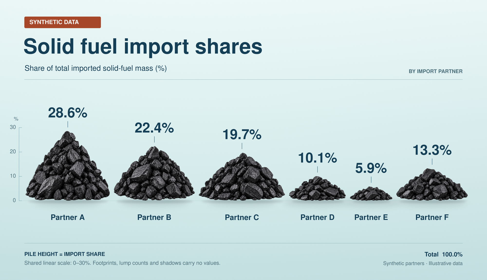

相近数据
当前输入数据第1轮

第2轮

首轮评价
六项数值、绑定和煤体高度准确，煤堆直接承载数据，共同地面及独立阴影关系保留。未发现实质缺陷。review.json已保存并通过schema校验；未运行submit.py。
| 维度 | 状态 | 证据 |
|---|---|---|
| completeness | pass | 六类别、单一份额系列、合成声明、指标、单位与总计完整。 |
| numeric_text | pass | 28.6%、22.4%、19.7%、10.1%、5.9%、13.3%逐项符合输入，Total 100.0%正确。 |
| binding | pass | 百分比和短引线位于对应煤堆上方，Partner标签位于下方，顺序正确且无错绑。 |
| geometry | pass | 实测煤体高度286、224、197、101、59、133像素符合共同线性尺度，阴影未计入高度。 |
| source | pass | 已查看原始生图素材和裁切煤体，其轮廓纹理对应最终主体；源码根据输入数据缩放完整RGBA煤体并绘制文字。 |
| integration | pass | 完整煤体从最高点至地面接触处的高度承担编码，物体并非旁置装饰；图面明确块数、脚印和阴影不编码。 |
| readability | pass | 主题、指标、类别父类、六组标签、单位和编码说明清楚，无明显遮挡或裁切。 |
| critical_structure | pass | 煤块相互接触并向上堆叠，六组底部沿共同地面；浅阴影位于煤体后下方，与数据边界可区分。 |
| semantic_meaning | pass | 标题表达固体燃料进口份额，副标题明确占总进口固体燃料质量的百分比，BY IMPORT PARTNER说明类别角色。 |
| reference_meaning | partial | 保留按伙伴比较进口质量份额及煤堆承载关系；EU、2014和真实国家改为合成伙伴，属于冻结输入允许的改编。 |
| small_mark_visibility | pass | 最小E约174像素宽、59像素高，仍可辨认煤块重叠、连续堆体与地面接触；高度准确，未人为放大。 |
执行：ok；最终代码复现像素一致：True
最终图评价
六项数值、绑定和煤体高度准确，煤堆直接承载数据，共同地面及独立阴影关系保留。未发现实质缺陷。review.json已保存并通过schema校验；未运行submit.py。
| 维度 | 状态 | 证据 |
|---|---|---|
| completeness | pass | 六类别、单一份额系列、合成声明、指标、单位与总计完整。 |
| numeric_text | pass | 28.6%、22.4%、19.7%、10.1%、5.9%、13.3%逐项符合输入，Total 100.0%正确。 |
| binding | pass | 百分比和短引线位于对应煤堆上方，Partner标签位于下方，顺序正确且无错绑。 |
| geometry | pass | 实测煤体高度286、224、197、101、59、133像素符合共同线性尺度，阴影未计入高度。 |
| source | pass | 已查看原始生图素材和裁切煤体，其轮廓纹理对应最终主体；源码根据输入数据缩放完整RGBA煤体并绘制文字。 |
| integration | pass | 完整煤体从最高点至地面接触处的高度承担编码，物体并非旁置装饰；图面明确块数、脚印和阴影不编码。 |
| readability | pass | 主题、指标、类别父类、六组标签、单位和编码说明清楚，无明显遮挡或裁切。 |
| critical_structure | pass | 煤块相互接触并向上堆叠，六组底部沿共同地面；浅阴影位于煤体后下方，与数据边界可区分。 |
| semantic_meaning | pass | 标题表达固体燃料进口份额，副标题明确占总进口固体燃料质量的百分比，BY IMPORT PARTNER说明类别角色。 |
| reference_meaning | partial | 保留按伙伴比较进口质量份额及煤堆承载关系；EU、2014和真实国家改为合成伙伴，属于冻结输入允许的改编。 |
| small_mark_visibility | pass | 最小E约174像素宽、59像素高，仍可辨认煤块重叠、连续堆体与地面接触；高度准确，未人为放大。 |
详细测量、部件关系与意义来源（附加）
{
"measurements": [
{
"series_id": "S1",
"category": "Partner A",
"expected_value": 28.6,
"observed_value": 28.6,
"measurement_method": "direct_pixel",
"mark_extent_px": 286,
"full_scale_error_percent": 0,
"small_value_relative_error_percent": 0,
"bbox_xyxy_normalized": [
0.0525,
0.46777,
0.2255,
0.716899
],
"evidence_zh": "煤体纵向区间[537,823)，高286px；按可见刻度换算28.6%。",
"uncertainty_zh": "抗锯齿边缘约±1px；零差为整数像素估计。"
},
{
"series_id": "S1",
"category": "Partner B",
"expected_value": 22.4,
"observed_value": 22.4,
"measurement_method": "direct_pixel",
"mark_extent_px": 224,
"full_scale_error_percent": 0,
"small_value_relative_error_percent": 0,
"bbox_xyxy_normalized": [
0.234,
0.521777,
0.4,
0.716899
],
"evidence_zh": "煤体纵向区间[599,823)，高224px；按可见刻度换算22.4%。",
"uncertainty_zh": "抗锯齿边缘约±1px；零差为整数像素估计。"
},
{
"series_id": "S1",
"category": "Partner C",
"expected_value": 19.7,
"observed_value": 19.7,
"measurement_method": "direct_pixel",
"mark_extent_px": 197,
"full_scale_error_percent": 0,
"small_value_relative_error_percent": 0,
"bbox_xyxy_normalized": [
0.408,
0.545296,
0.585,
0.716899
],
"evidence_zh": "煤体纵向区间[626,823)，高197px；按可见刻度换算19.7%。",
"uncertainty_zh": "抗锯齿边缘约±1px；零差为整数像素估计。"
},
{
"series_id": "S1",
"category": "Partner D",
"expected_value": 10.1,
"observed_value": 10.1,
"measurement_method": "direct_pixel",
"mark_extent_px": 101,
"full_scale_error_percent": 0,
"small_value_relative_error_percent": 0,
"bbox_xyxy_normalized": [
0.5935,
0.62892,
0.71,
0.716899
],
"evidence_zh": "煤体纵向区间[722,823)，高101px；按可见刻度换算10.1%。",
"uncertainty_zh": "抗锯齿边缘约±1px；零差为整数像素估计。"
},
{
"series_id": "S1",
"category": "Partner E",
"expected_value": 5.9,
"observed_value": 5.9,
"measurement_method": "direct_pixel",
"mark_extent_px": 59,
"full_scale_error_percent": 0,
"small_value_relative_error_percent": 0,
"bbox_xyxy_normalized": [
0.7185,
0.665505,
0.8055,
0.716899
],
"evidence_zh": "煤体纵向区间[764,823)，高59px；按可见刻度换算5.9%。",
"uncertainty_zh": "约±1px边界不确定性对应±0.1个百分点，约±1.7%相对误差；零差不表示亚像素精确。"
},
{
"series_id": "S1",
"category": "Partner F",
"expected_value": 13.3,
"observed_value": 13.3,
"measurement_method": "direct_pixel",
"mark_extent_px": 133,
"full_scale_error_percent": 0,
"small_value_relative_error_percent": 0,
"bbox_xyxy_normalized": [
0.8135,
0.601045,
0.9605,
0.716899
],
"evidence_zh": "煤体纵向区间[690,823)，高133px；按可见刻度换算13.3%。",
"uncertainty_zh": "抗锯齿边缘约±1px；零差为整数像素估计。"
}
],
"part_relations": [
{
"category": "Partner A（最大项）",
"required_parts": [
"棱角煤块",
"完整煤体",
"接地面",
"独立阴影"
],
"relationship": "煤块相互接触并前后遮叠，完整煤体从共同地面向上延伸，阴影铺在后下方地面。",
"status": "pass",
"bbox_xyxy_normalized": [
0.05,
0.46777,
0.2285,
0.743902
],
"evidence_zh": "前排大煤块与上部煤块连接成堆，底部接地并有柔化阴影；286px煤体高度承载28.6%。"
},
{
"category": "Partner C（内部项）",
"required_parts": [
"上层煤块",
"前排煤块",
"接地边",
"软阴影"
],
"relationship": "上层与下层接触，前排遮住后排下部，整体落在共同地面。",
"status": "pass",
"bbox_xyxy_normalized": [
0.4065,
0.545296,
0.5875,
0.743902
],
"evidence_zh": "煤体层叠及完整外轮廓清楚，没有被邻堆遮挡；197px高度承载19.7%。"
},
{
"category": "Partner E（最小项）",
"required_parts": [
"小煤块",
"矮堆顶",
"底部煤块",
"地面及阴影"
],
"relationship": "煤块在低矮轮廓内相互叠置并接地，阴影位于煤体外下方。",
"status": "pass",
"bbox_xyxy_normalized": [
0.716,
0.665505,
0.8085,
0.743031
],
"evidence_zh": "中央斜面煤块及周围底层煤块仍可辨认，接地与软阴影分离，59px为实际数据高度。"
}
],
"meaning_trace": {
"current_topic": "pass",
"metric_and_unit": "pass",
"category_roles": "pass",
"reference_action_or_argument": "partial",
"allowed_input_adaptation_zh": "原欧盟2014年真实来源统计被明确改为合成固体燃料进口来源份额及Partner A–F。",
"output_added_or_lost_meaning_zh": "保留按进口伙伴比较质量份额的含义；高度编码说明清楚。原真实统计范围的省略属于允许改编，未见额外必要语义丢失。",
"visible_inscription_evidence_zh": "可读SYNTHETIC DATA、Solid fuel import shares、Share of total imported solid-fuel mass (%)、BY IMPORT PARTNER、Partner A–F、PILE HEIGHT = IMPORT SHARE及Total 100.0%。"
},
"attribution": [
{
"cause": "input_adaptation",
"evidence_zh": "参考图的EU、2014及真实伙伴被冻结输入明确替换为合成主题与伙伴，不归因于生成器。"
},
{
"cause": "data_driven_shape_change",
"evidence_zh": "六个完整煤体高度经像素测量符合当前输入；形态变化保留煤堆身份和接地关系。"
}
],
"measurement_coverage_zh": "覆盖唯一系列的全部六个高度，包括最大、最小及内部项；另行核对全部类别、数值、单位和总计。部件关系抽查A、C、E。阴影、占地和煤块数量按明示不编码，未作数值测量。"
}详细评审JSON执行：ok；最终代码复现像素一致：True